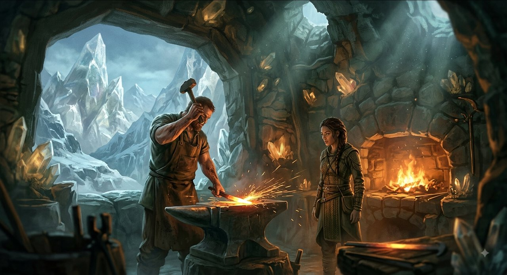
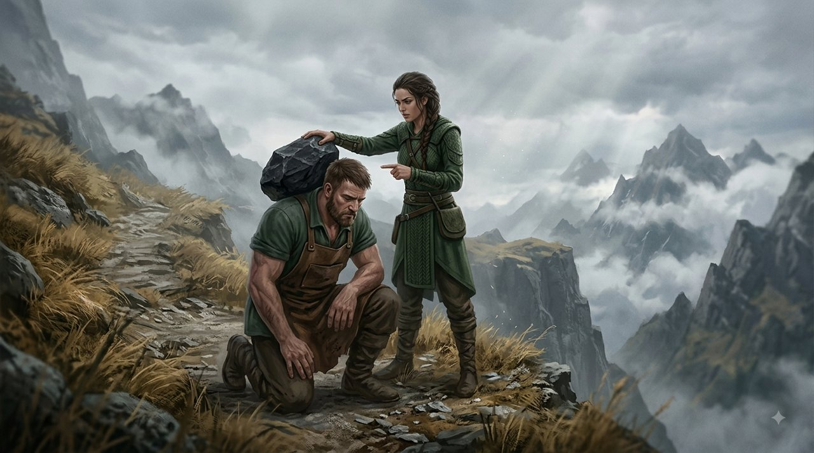
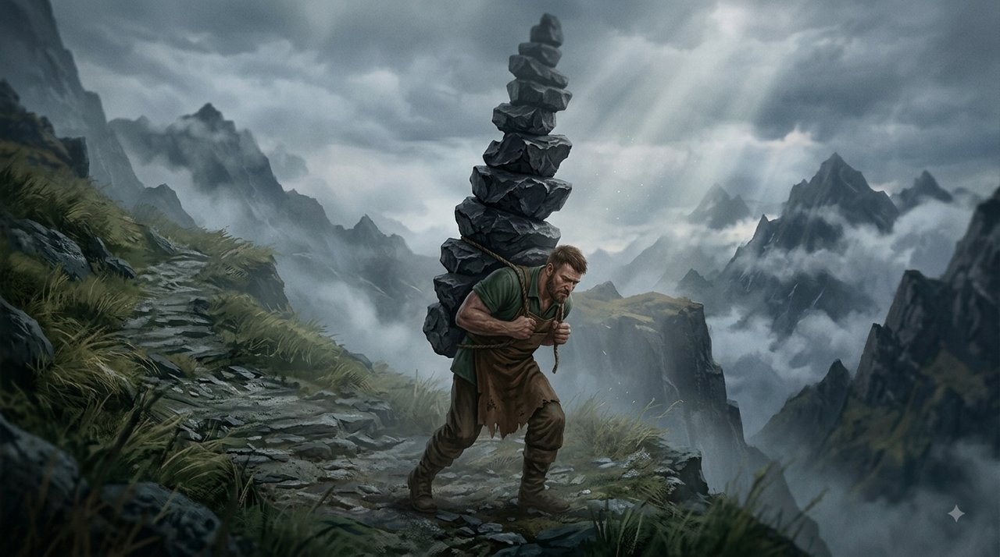
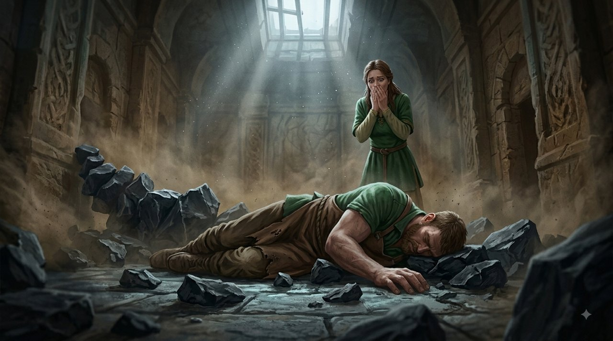
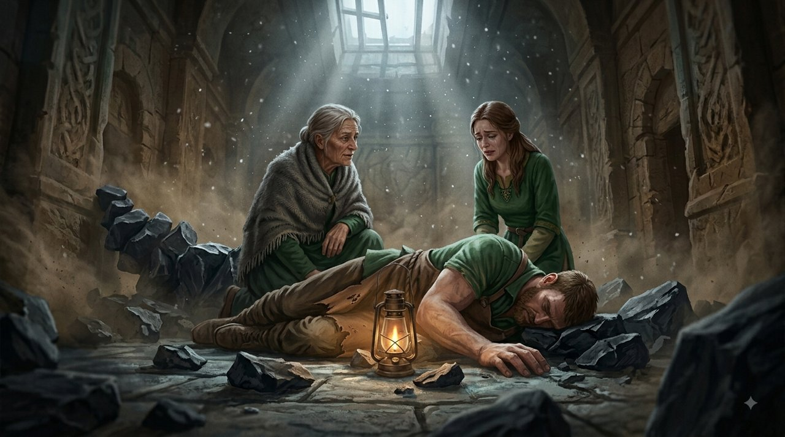

High in the Crystal Mountains lived Kai, a diligent and big-hearted blacksmith, together with his partner Selin. Selin was a woman full of passion but haunted by fierce inner storms. Every time a cold gust of wind came into her house, every time the cooking pot boiled over, or every time a meeting with the townspeople ended in a feeling of unease – she would turn straight to Kai.

But instead of sharing the burden, Selin made Kai the source of every misfortune: if she stumbled on a stone in the path, she flung at him: "I fell because of you! You did not clear the way and you were not watching over me!" If the sky darkened and rain soaked the cloths, she cried out: "It is all because of you! You knew this would happen and you did not stop it, you always ruin everything for me!" And if she felt distant from the rest of the village, she shouted in pain: "It is your fault that I have no one! You did not fight hard enough for me, you are a useless husband!"
Kai, who loved her with all his heart and wanted only to shield her from her suffering, bowed his head and said nothing. He believed that his role as a partner was to be solid armour – to carry every accusation, to absorb every blow, and to hold all of her pain so that she would not fall apart.
Every time she blamed him, Selin laid on Kai's back a heavy black basalt stone, saying: "This is the weight of the pain you caused me." Kai carried the stones in silence, bending further and further, trying to keep smiling, to hand her a cup of water and to whisper: "I am here, I will watch over you."
The Tower on His Back

Over the years the pile of stones on Kai's back became an enormous tower, too heavy to bear. His knees shook, his breath failed him, and his back broke slowly. He could no longer hold her, could no longer look into her eyes, and could not even walk at her side.
One evening, when the soup scorched a little on the fire, Selin broke into a fresh storm: "You see?! You have ruined everything again! You are to blame for everything wrong in my life!" She took the heaviest stone she could find and hurled it with force onto the top of the pile on his back.

In that moment there was an enormous cracking sound. Kai's knees collapsed and he fell to the floor, shackled and crushed beneath the weight of countless stones that had never been his. He lay motionless, utterly spent, his eyes gone out from the effort of surviving.
Selin froze in horror. Around her the house stood empty, and the man who had always stood there, absorbing, soothing and protecting – lay helpless on the ground, unable to rise.
The Mountain Healer

Suddenly the old mountain healer appeared in the room. She looked at Kai lying beneath the rocks, and then looked at the weeping Selin: "Why are you crying, Selin? You laid on him everything that hurt you."
"I wanted him to fix it all!" Selin cried out in despair. "I wanted him to be strong and to protect me from the whole world! Why did he break?!"
The old woman bent down and lifted one stone from the pile. "Love is not a punching bag, and a partner is not a vessel for every frustration life brings," she said in a piercing voice. "Instead of taking responsibility for the storms in your soul, you turned the one person who protected you into the target of your fury. You blamed him for every stone in your road, until you crushed the hands that wanted to hold you and the shoulders that wanted to carry you forward."
Selin fell to her knees beside Kai, and with scratched hands began to clear the stones away, one after another.
Whoever makes the one who loves him guilty of all his troubles will be left, in the end, alone – with the whole burden he refused to carry himself.